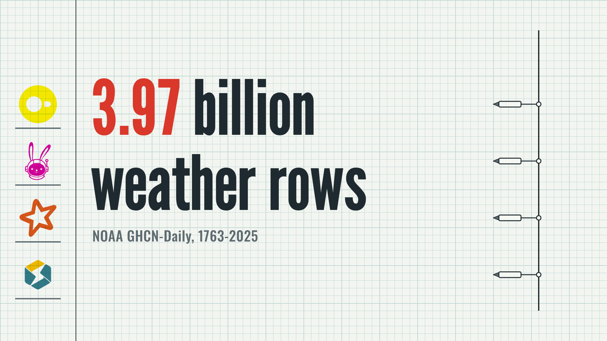
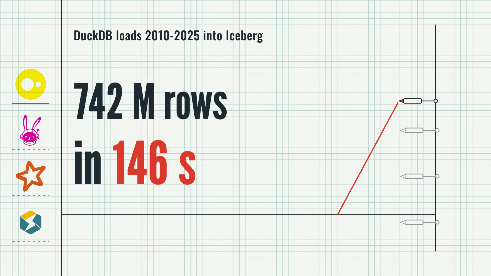
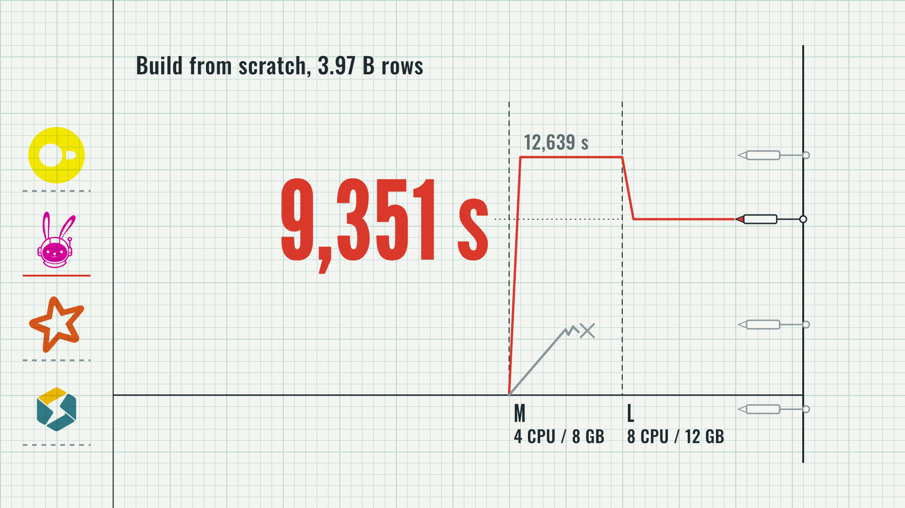
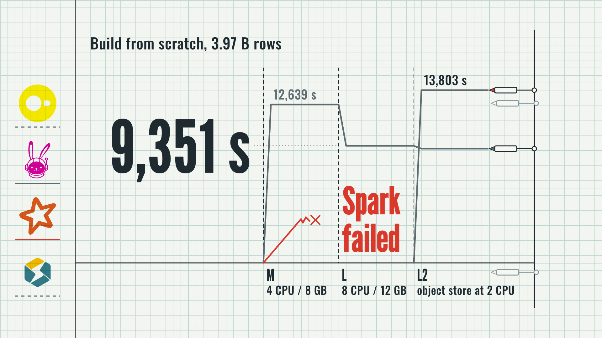
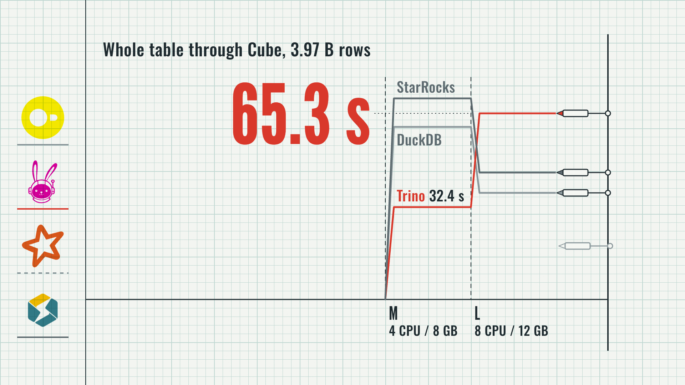
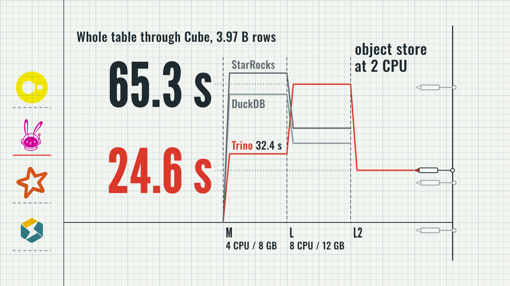
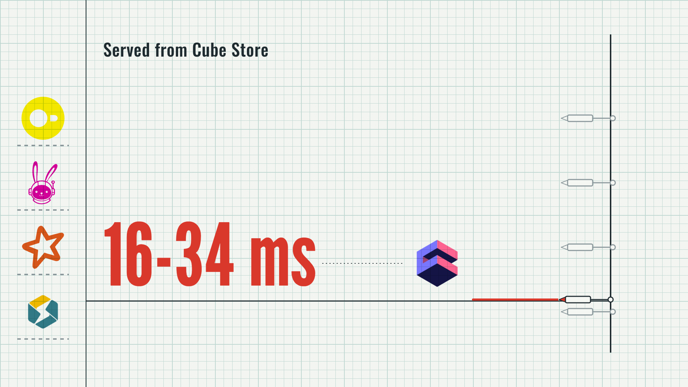
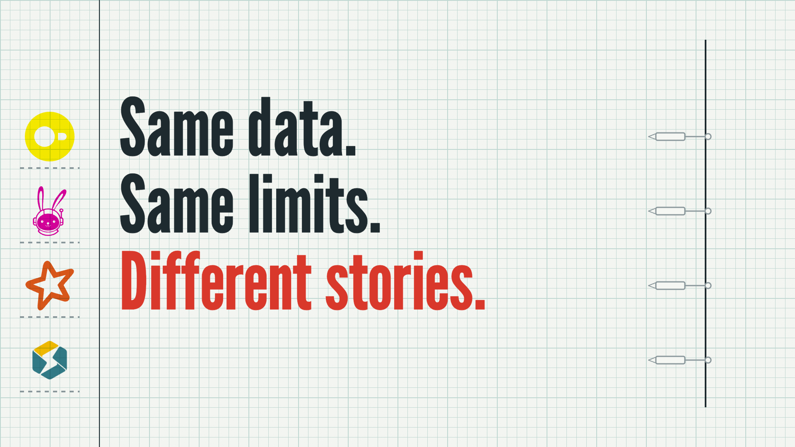
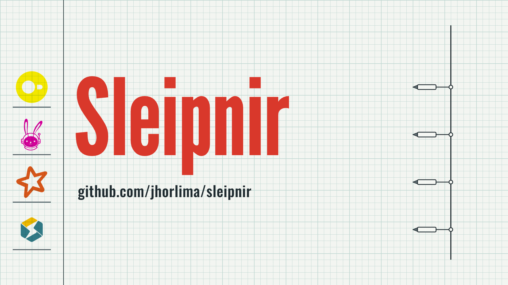

Four pens rest on the paper beside the engine key; "3.97 billion weather rows" is stamped huge, "3.97" in red.

The drum turns and DuckDB's red pen climbs; "742 M rows in 146 s" is stamped, "146 s" in red.

New sheet. Trino's red step falls from 12,639 s on M to 9,351 s on L; Spark's grey line breaks off on M.

The drum runs into L2 and Spark's line reaches 13,803 s; "Spark failed" lands in red beside its break on M, and Trino's line and "9,351 s" turn graphite.

New sheet. Through Cube, StarRocks and DuckDB get faster on L, but Trino's red pen climbs from 32.4 s to "65.3 s", stamped in red.

"object store at 2 CPU" is stamped over L2; Trino's red line drops to "24.6 s" in red, and "65.3 s" turns graphite.

New sheet. A red line runs flat on the zero line; the Cube logo and "16-34 ms" are stamped on the bass hit.

Pens lifted. "Same data. Same limits. Different stories." is stamped in three beats, the last in red.

Pens back down. "Sleipnir" is stamped in red over the repo URL and holds.